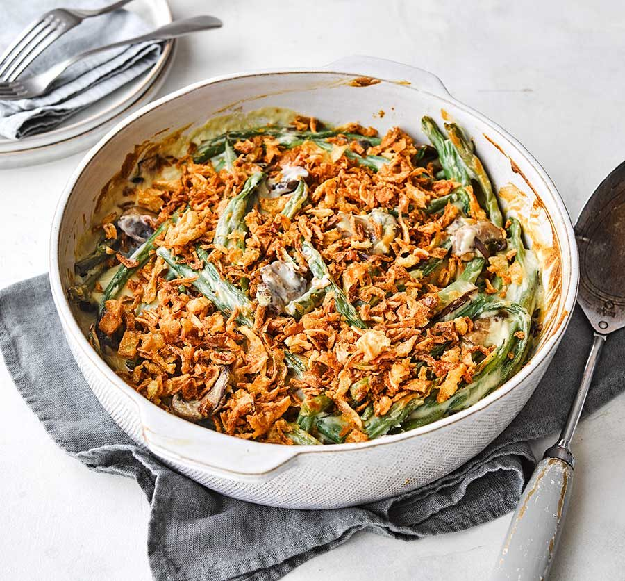

Green Bean Cassarole

Description
This green bean casserole with canned beans and
French-fried onions is a holiday favorite with
my family, and it's easy to make. It should be
a tradition in every household!
Ingredients
- 2 (15 ounce) cans cut green beans, drained
- 1 (10.5 ounce) can condensed cream of mushroom soup
- ¾ cup milke
- 1 (2.8 ounce) can French fried onions
- Salt and Pepper to taste
Directions
- Preheat the oven to 350 degrees F (175 degrees C).
- Mix green beans, cream of mushroom soup, milk, and
1/2 of the fried onions in a medium casserole dish..
- Bake in the preheated oven until heated through and
bubbly, about 25 minutes. Sprinkle remaining onions
over the top, and return to the oven for 5 minutes.
Season with salt and pepper to taste.
Nutrtion Facts
Per Serving: 168 calories; protein 3g;
carbohydrates 15.2g; fat 10.3g; cholesterol 2.4mg; sodium 851.3mg.